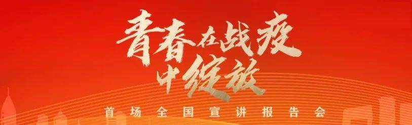
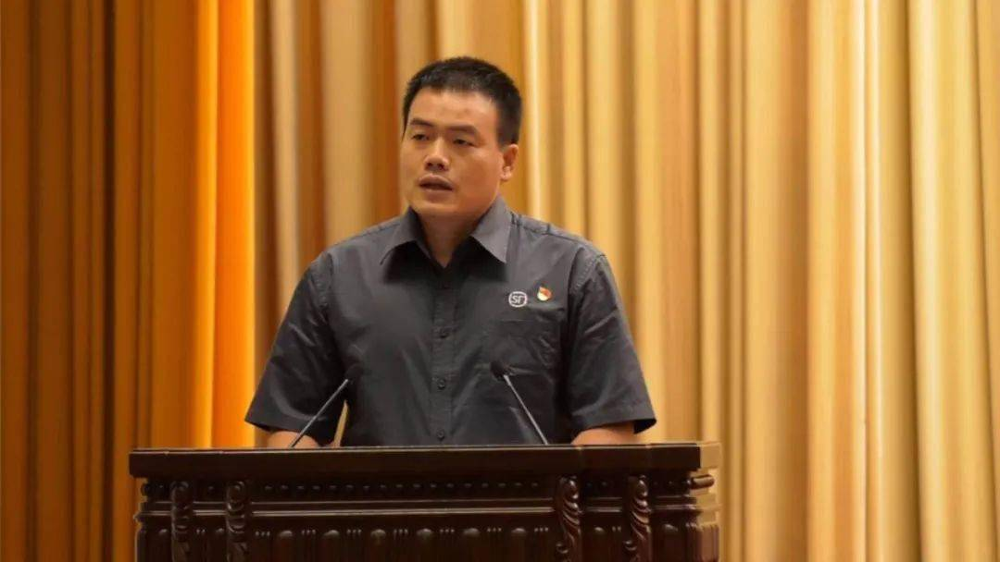
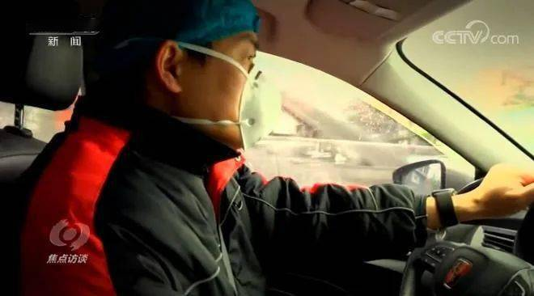
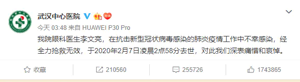
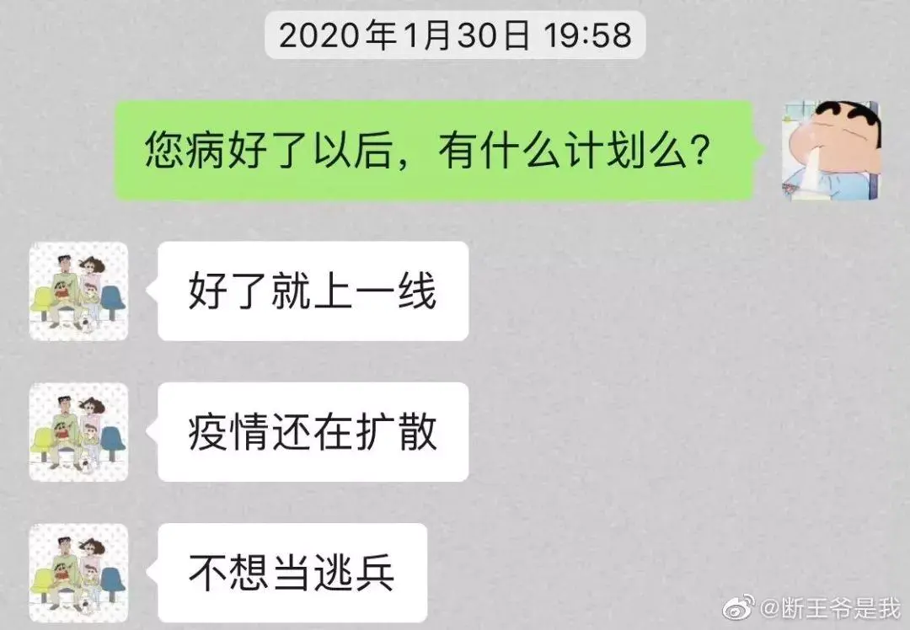
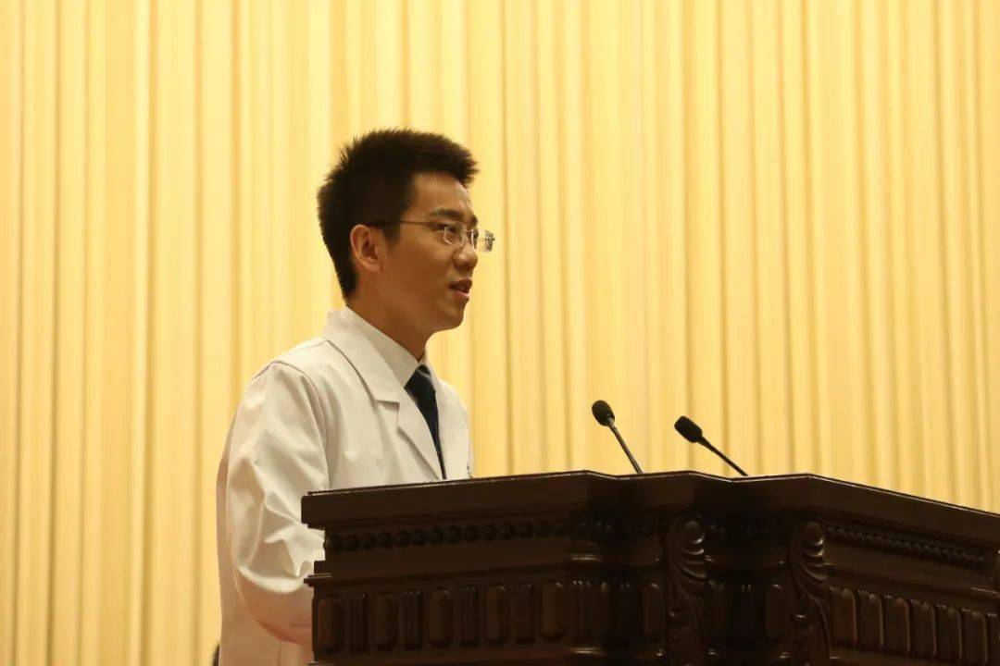
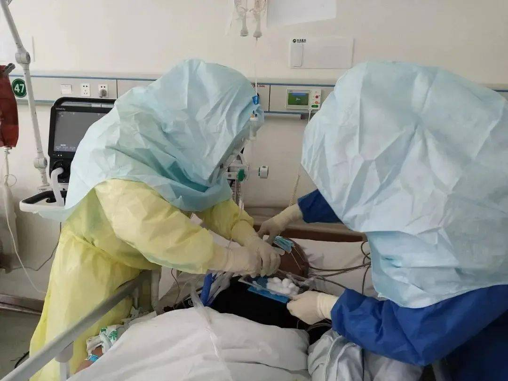
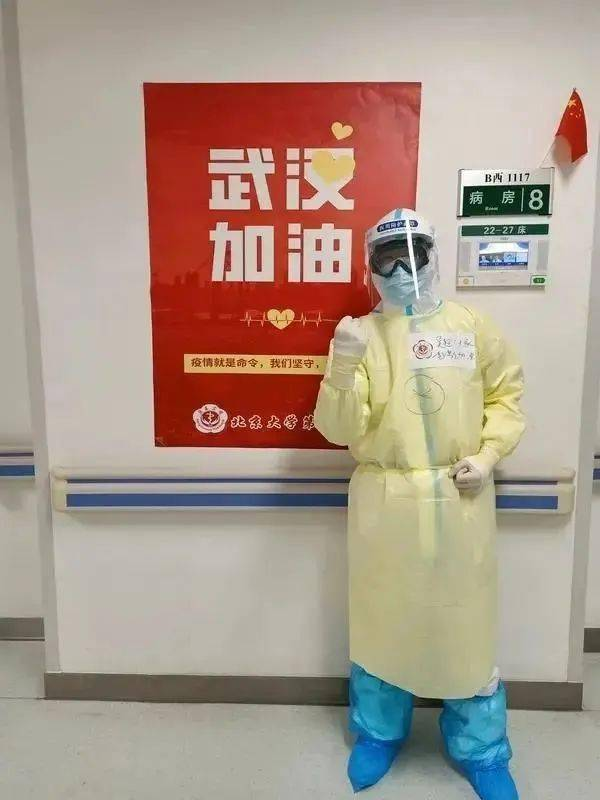
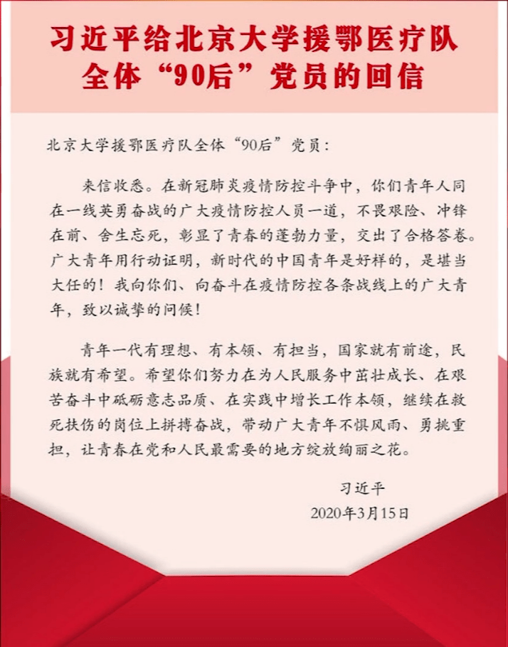

9月21日早上，汪勇走进了人民大会堂。
这是他人生中第二次走进这里，上一次是参加不久前举行的全国抗击新冠肺炎疫情表彰大会接受表彰。
汪勇穿了自己平时穿的工作服，一件灰色的短袖衬衫、深色裤子。
35岁的汪勇是武汉人，除了快递员，他还干过出租车司机，当过电脑维修师傅，做过建材业务员，也在夜市里摆地摊儿。这之前，他从来没有想到过自己这一辈子能够进入人民大会堂，更别说站在里面宣讲。

9月21日早上，北京人民大会堂，汪勇在“青春在战疫中绽放”首场全国宣讲报告会进行分享
汪勇带领的志愿者司机团队，自大年三十开始，义务接送武汉金银潭医院医护人员上下班，协调推动网约车企业参与接送医护人员。为满足医护人员更多的用车需求，他仅用一周时间，就组建起了30多人的志愿服务车队，还协调共享单车企业在医院周边投放单车。

图片来源：微博@平安武汉
为了不让医护人员下夜班后吃不上饭，他们自行募集资金提供泡面，“扫街”找餐馆、争取有关部门餐食供应，每天为10家医院提供超过1500份的免费餐食，快速搭建起应急餐食免费配送备用网络。
那个晚上，朋友圈和各个微信群里有许多人在转发他去世的假消息，但是更多的人在刷屏：“再等等”。因为那个时候，医院的官方消息是“正在全力抢救中”！！
然而，天亮后，大家都看到了这样一条让人心疼难过的信息。

这位年轻的李文亮医生，2020年2月7日凌晨2点58分，离开了人间。
35岁的他本无意成为英雄，或者去拯救多少人。事实上，他只是一个平凡的普通人，这个普通人，也害怕强权，明明知道自己说的是正确的却也承认了自己造谣，并且写？？？ 这个普通人，没有一开始广泛科普，而是仅告诉自己的亲朋好友要小心。
1月31日，记者曾问他：你现在最挂念的是什么？李文亮：最挂念我的家人，我的父母还在住院，我的爱人现在怀着孕。现在什么都不重要了，我希望疫情赶快控制住，大家都能好好的。
是的，他没有豪言壮语，没有说要拯救地球拯救人类拯救全中国。
可是即便如此，还是有无数的民众纷纷表达欠他一句：
谢谢你！
对不起你！
谢谢你是源于最初对疫情的善意提醒，谢谢你即使躺在病床上还写等好了要志愿参加防疫小组工作，谢谢你在早期引起一部分公众对疫情的重视，知道了怎样保护自己，远离疫情

李文亮医生的聊天记录。图：@断王爷是我
对不起是你善意提醒的同学当中有人辜负了你的信任，对不起你你是因为你直到离开的时候没有听到的那句道歉。
因为，世上没有从天而降的英雄，只有挺身而出的平凡人。
但恰恰是那些挺身而出的平凡人，才是真正的英雄！在一片沉默的世界里，“吹哨人”就是这样挺身而出的平凡人。他们告诉能够听到哨声的人，有危险，快躲开！
像李文亮医生这样的“吹哨人”，他从来没有想因此名扬天下。他的初心就是提醒身边的人，抵抗疫情，战胜魔鬼。
而对逝者最好的告慰，就是我们每个人也成为挺身而出的平凡英雄。
我们需要做的也不是做什么惊天动地的大事，只需要保护自己，不伤害身边人。最近尽可能不出门，出门必戴口罩，不聚众，不传染别人，不吃野生动物等这些非常简单而有效的事情。
疫情非常时期，不要小看每一个人的力量，也不要小看“戴口罩、不聚众”这样貌似简单的行为。
前几天，晋江男子以“一己之力”祸害4000余人的情况,刷屏了微博。相比之下，“吹哨人”的存在，对于社会和人类可以产生不可估量的价值。
再次倡议，疫情非常时期，尽可能不出门，出门必戴口罩！！
再次致敬“吹哨人”李文亮医生！
让青春在党和人民最需要的地方绽放绚丽之花
 （北京大学援鄂抗疫医疗队“90后”党员医生代表、 全国抗击新冠肺炎疫情先进集体、第24届“中国青年五四奖章集体”代表）
他是吴超
“哪里有什么白衣天使，
不过是一群孩子换了一身衣服。”
北京大学先后派出了四批援鄂医疗队共计428人驰援湖北这些人中“90后”占了将近一半,他就是其中的一份子
图片来源：微信公众号“北医青言微语”
他们奋战在一线
不畏艰险，冲锋在前
他们用自己的专业和热爱
展现担当和智慧
创新性地设计了标准化问诊表格
制定了标准化交接班工作规范
在前辈们的指导下
协助团队在一线开展了
多项创新医疗技术
他在抗疫一线（图片来源：北京大学学生工作部网站）
这其中有一支年轻的百人护理团队,每天他们都会给病人进行翻身、喂饭等生活护理,温暖呵护每一个病人,为患者带一份煮好的热干面 ,专门建立“微信加油群”,持续进行爱心鼓励等等。
图片来源：北京大学学生工作部网站